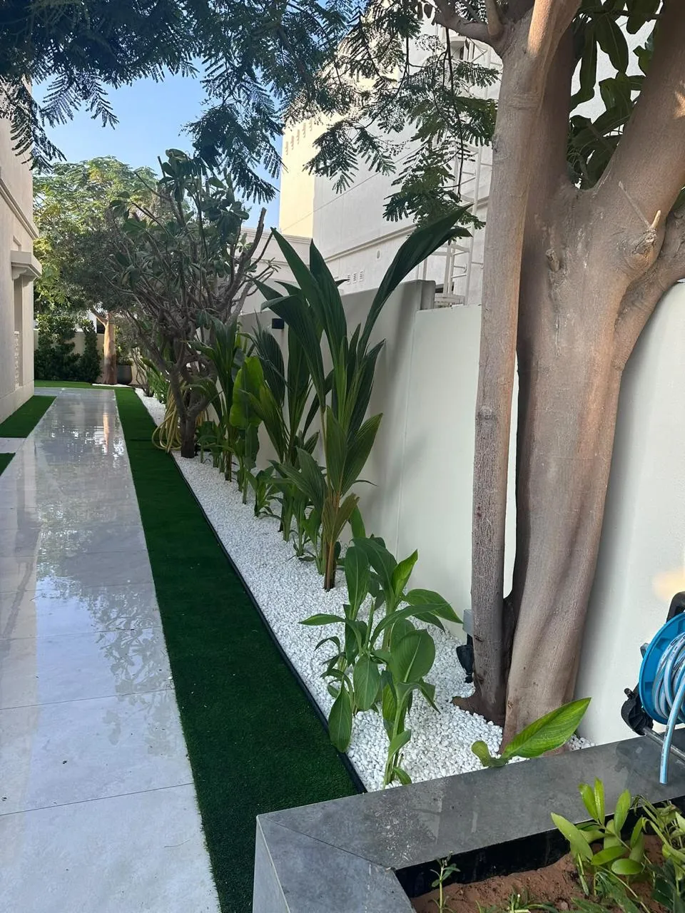

The short answer
Real grass is the better choice for open, sunny lawns where you want a cool, soft surface and are happy to irrigate and maintain it. Artificial grass works best in shaded areas, small courtyards, roof terraces and spots where real grass simply will not grow. Many of the best Dubai gardens use both, plus planting and paving to reduce the lawn to the size it really needs to be.
Real grass in Dubai
A real lawn is cooler, softer and more alive than any synthetic surface. On a summer evening, irrigated grass is noticeably cooler to sit on, and it helps cool the air around it.
Which grasses grow well here
- Seashore paspalum: the most common villa lawn in Dubai. It tolerates heat and salty water well, which makes it a good choice near the coast.
- Bermuda grass: hard-wearing and quick to recover, popular for family lawns and sports areas.
- Zoysia: dense and fine-textured, slower growing, with a little more shade tolerance than the others.
What a real lawn needs
- Sun. Warm-season grasses need several hours of direct sun a day. Under trees, pergolas or the shadow of the house, they thin out and fail.
- Good irrigation. An automatic system with pop-up sprinklers, set to water early in the morning or late in the evening, is essential in summer.
- Proper soil preparation. Dubai sand drains fast and holds few nutrients. Improving the soil before turf goes down makes the lawn greener and less thirsty.
- Regular care: mowing, feeding and occasional treatment for pests.
Artificial grass in Dubai
Good-quality artificial grass has improved enormously. It stays green all year, uses no irrigation water and needs no mowing. It also has real limitations in this climate.
The heat problem
In direct summer sun, synthetic turf gets far hotter than natural grass and can become too hot to walk on barefoot or for pets to lie on. Light-coloured and "cool" products help, and rinsing it down cools it briefly, but it is still a plastic surface in the sun. This is the single most important thing to understand before choosing it.
What good artificial grass needs
- A proper base: excavated, compacted and levelled, with a free-draining layer, so it drains after rain or rinsing and does not develop dips.
- UV-stable fibres made for desert sun, with a backing that allows water through.
- Occasional rinsing and brushing to remove dust and sand and keep the pile upright, and more regular cleaning if you have pets.
A quality installation typically lasts many years, but strong sun shortens the life of cheaper products, which can fade and become brittle.
Side by side
| Real grass | Artificial grass | |
|---|---|---|
| Surface in summer sun | Cool when irrigated | Can become very hot |
| Water | Needs daily irrigation in summer | None, except for rinsing |
| Shade | Struggles in shade | Unaffected by shade |
| Maintenance | Mowing, feeding, irrigation checks | Brushing, rinsing, cleaning |
| Upfront cost | Lower | Higher |
| Running cost | Water and maintenance | Low |
| Look and feel | Natural, soft, alive | Even and always green |
Where each one works best
- Open lawns in full sun: real grass. It is the cooler, more pleasant surface exactly where you need it most.
- Under pergolas, trees and deep shade: artificial grass, or better still, paving, gravel or shade-tolerant ground cover.
- Roof terraces and balconies: artificial grass on a suitable drainage mat, as long as the structure and waterproofing allow it.
- Children's play areas: real grass in the sun, or artificial grass with a shock-absorbing underlay in a shaded spot.
- Holiday homes and rentals: artificial grass reduces the risk of returning to a dead lawn after a summer away.

A third option: less lawn
The most beautiful Dubai gardens are rarely wall-to-wall grass. A lawn sized for how you really use it, framed by layered, climate-suited planting, stone paths and a shaded seating area, uses less water, needs less maintenance and looks finished all year. We look at how to do this in villa landscaping ideas for Dubai communities.
Our softscape work is led by our co-founder Banu, who chooses every plant for the light, heat and water of the individual garden. Meet Banu.
Common questions
Does artificial grass get hot in Dubai?
Yes. In direct summer sun, synthetic turf becomes much hotter than natural grass and can be too hot to walk on barefoot. It works best in shaded areas, or where it is used mainly in the cooler months and evenings.
Which real grass is best for Dubai?
Seashore paspalum is the most widely used villa lawn because it handles heat and salty water well. Bermuda grass is hard-wearing for family lawns, and zoysia offers a dense, fine lawn with a little more shade tolerance.
Will real grass grow in the shade?
Warm-season grasses need several hours of direct sun a day, so they thin out under trees, pergolas and in the shadow of the house. In those spots, paving, gravel, shade-tolerant ground cover or artificial grass are usually better choices.
Is artificial grass cheaper than real grass?
It usually costs more to install, because it needs a properly prepared, free-draining base. It costs less to run, since it uses no irrigation water and needs no mowing.
Can you mix real and artificial grass in one garden?
Yes, and it often gives the best result: real grass in the sunny open areas, and artificial grass or hard landscaping in shaded corners, side returns and under pergolas.